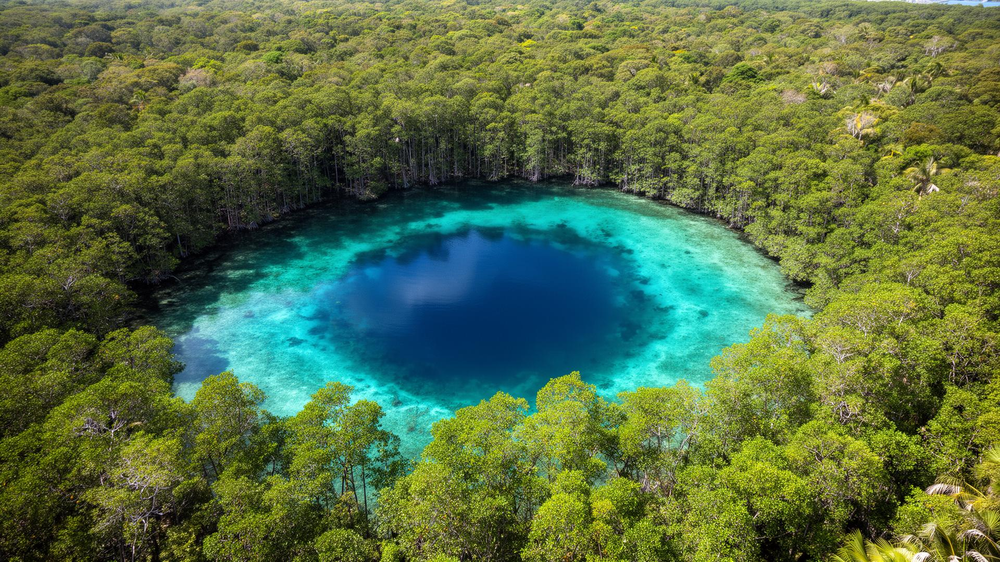
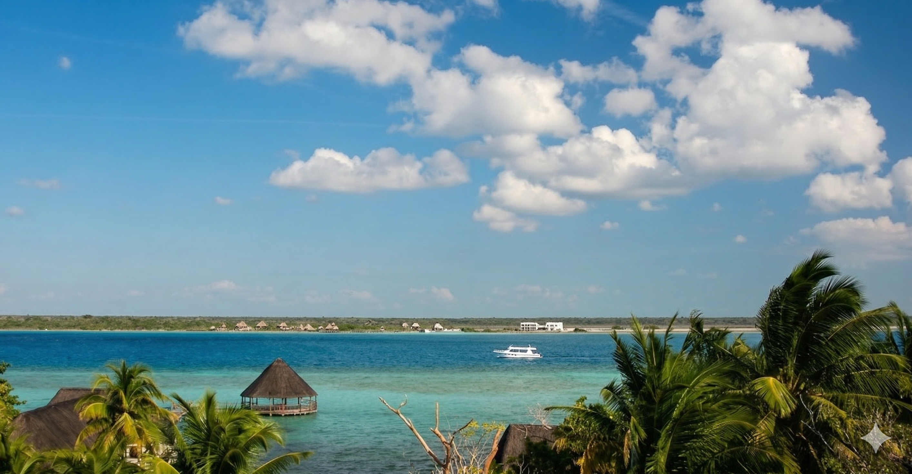
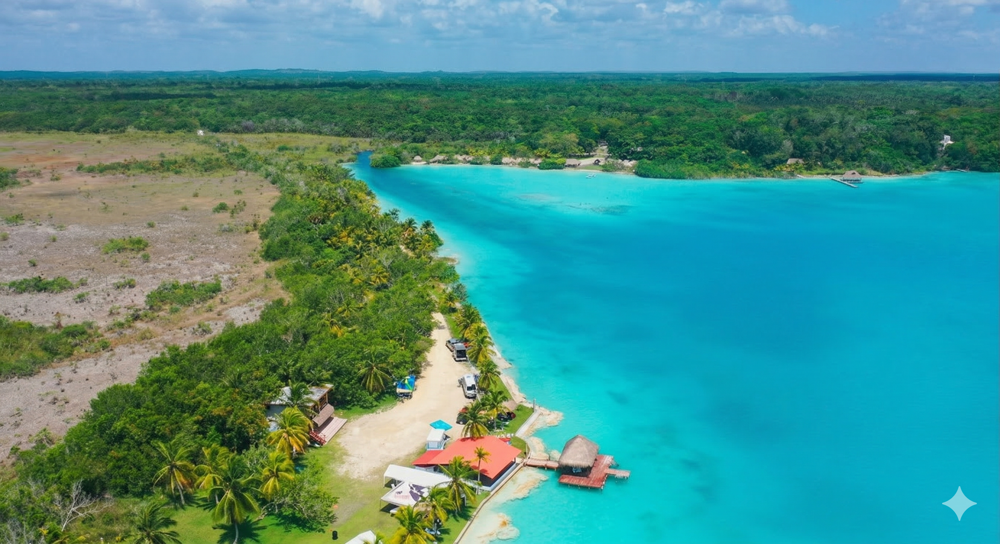

Laguna Kaan Luum
A quiet getaway in one of Tulum's best-kept secrets.
Experiencias naturales de agua dulce

A quiet getaway in one of Tulum's best-kept secrets.

The main attraction of Bacalar, also known as the Lagoon of the Seven Colors.

Yal Ku Lagoon is an inland lagoon that connects to the Caribbean.

A freshwater lagoon may be more to your liking than the salty waves of the ocean.